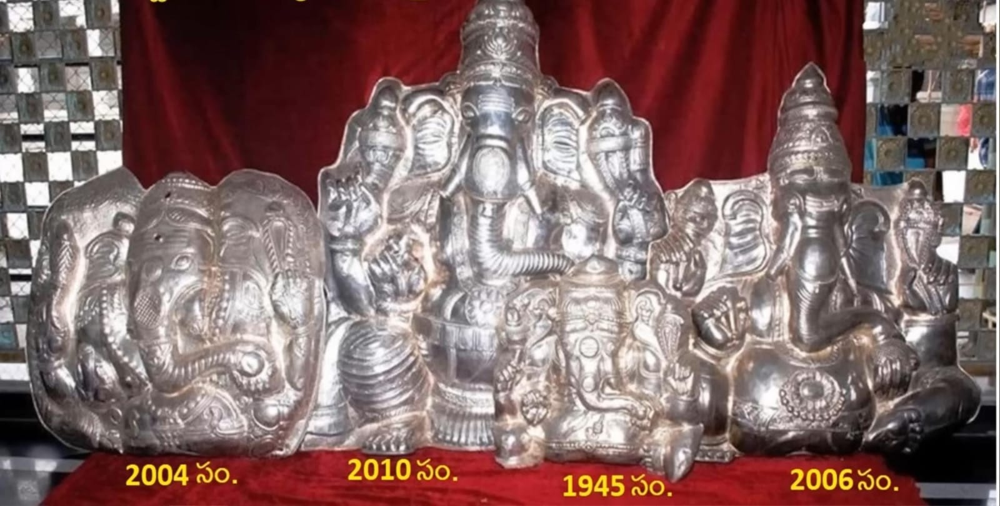

3. The third specialty is the presence of an Anjaneya Swami temple on the left side as soon as you enter the Kanipakam temple
He is the guardian deity (Kshetra Palaka) of this sacred place. This grand Anjaneya Swami is also known for its divine power, so offer your Namaskaram to him as well.
Lord Hanuman as Kshetra Palaka in Kanipakam
4. The fourth specialty is the main deity, the self-manifested Varasiddhi Vinayaka Swami. His history is well-known, but let's briefly recount it.
Three brothers lived here, one was blind, one was mute, and one was deaf.
The three brothers were farmers, and once their well dried up. They decided to dig deeper in the well using a digging bar, hoping to find water.
Blood gushed out when the bar hit a rock and splashed on all three brothers, making their disabilities miraculously cured.
When they shared this incredible event with the villagers, nobody believed them until they witnessed the brothers' healing.
The villagers then dug and discovered the self-manifested Ganapati idol in the water.
They offered coconuts, and the coconut water mixed with the blood flowed for over an acre, giving rise to the name "Kanipakam."
The Ganapati idol still resides in the well, and the water continues to well up. The priests offer this sacred water as Teertham to the devotees.
Therefore, if you visit Kanipakam, make sure to take Teertham, as its power is evident from this story.
Some people who studied science may doubt how blood can come out of a rock. When Swami wanted to reveal himself, he showcased this miraculous act.
Even though we didn't witness the original incident that happened during the 11th century, there are two proofs that prove that Swami is an alive idol.
The first proof is that the idol's size is growing over time.
As you walk around the temple, you will find Kavachas of Swami in a Mandapam (hall) on your right side, as shown in the picture.
In 1945, the size of Swami Kavacham was smaller compared to the current size, indicating that the idol has grown.
The second proof is that Ganapati, the bestower of health, will take away health as punishment if someone lies in front of him.
Considering these two factors, it becomes evident that the idol is alive.
If you visit the Antaralayam, the priests will share two more proofs.
Firstly, they will demonstrate that the idol is floating on the water by placing their hand under it, and it strangely comes out from the other side.
Secondly, the wound that was caused when they first discovered the idol in the well still exists on the idol's backside on his head.
These features showcase the greatness of Kanipakam.

The story of Kanipakam Kavacham for Lord Vinayaka in different years
Idol of Lord Vinayaka is floating in water
« Previous
Next »